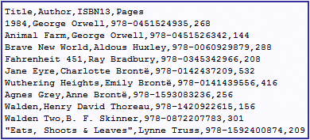
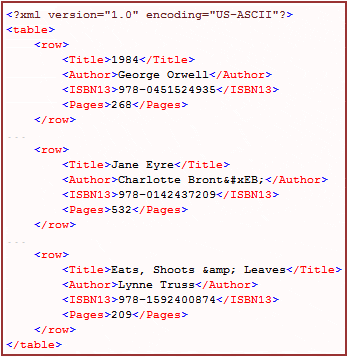
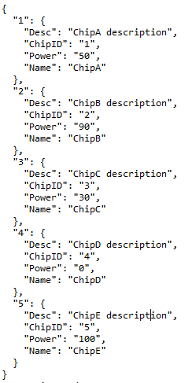
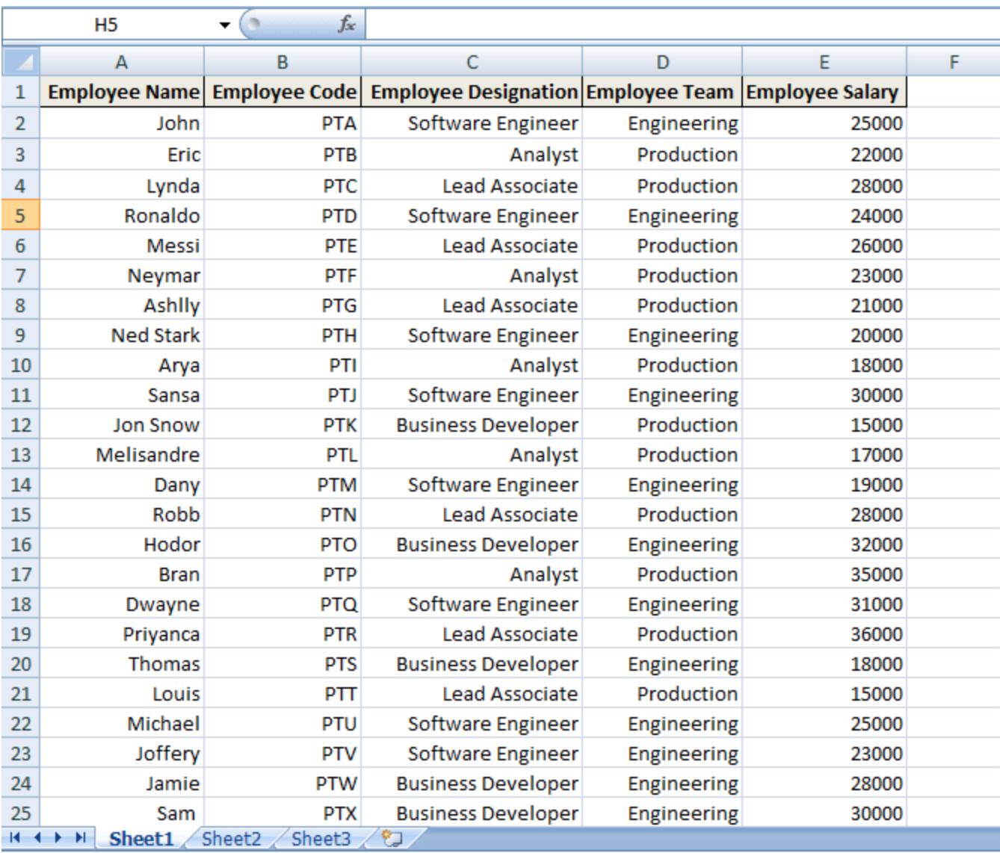
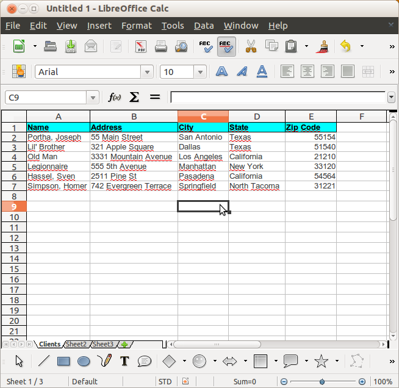

Chapter 3 Wczytywanie danych w R
3.1 Formaty danych
3.1.1 CSV/DSV
CSV (Comma Separated Values) to plik tekstowy, w którym wartości rozdzielane są przecinkami, a kolejne wiersze znakiem nowej linii. Plik CSV zazwyczaj przechowuje dane tabelaryczne. Nagłówki kolumn są często dołączane jako pierwszy wiersz (są to nazwy zmiennych), a każdy kolejny wiersz odpowiada jednej obserwacji (jednemu wierszowi w tabeli danych).
CSV jest szczególnym przypadkiem formatu danych o nazwie Delimiter Seperated Values (DSV). Jest to plik tekstowy w którym pola w każdym wierszu oddzielone są dowolnym separatorem. Najczęściej spotykane separatory to: przecinek (CSV), tabulator (TSV), średnik.
Przykładowy plik CSV

3.1.2 XML
XML to skrót od nazwy Extensible Markup Language. Dane przechowywane w tym formacie mają zagnieżdżoną strukturę: znaczniki oznaczają nazwy zmiennych, a wewnątrz przechowywane są ich wartości. XML swoją strukturą przypomina plik HTML.
Przykładowy plik XML

3.1.3 JSON
JSON - JavaScript Object Notation - to format przydatny w przypadku pracy z danymi pochodzącymi z REST API, czyli pobieranymi z sieci. Niektóre bazy danych również komunikują się za pomocą tego formatu, np. MongoDB.
Struktura: w pliku JSON obserwacje przechowywane są w słownikach, w których nazwy zmiennych są kluczami, a wartości zmiennych - wartościami. Obserwacje oddzielane są przecinkami, a dodatkowo, wszystkie dane spięte są nawiasami klamrowymi.
Przykładowy plik JSON

3.1.4 Excel (XLSX)
XLSX to format danych oparty na XML. Pliki tego typu są domyślnymi dokumentami wyjściowymi arkuszy kalkulacyjnych programu Microsoft Excel. Przedstawiają one głównie dane liczbowe i tekstowe w postaci tabel dwuwymiarowych.
Przykładowy arkusz kalkulacyjny w Excelu

3.1.5 Otwarte wersje programu Excel
Istnieją inne pakiety biurowe, np. LibreOffice, które - w przeciwieństwie do Excela - pozwalają na darmowe korzystanie z arkusza kalkulacyjnego. W przypadku LibreOffice, domyślnym formatem zapisu danych przez Calc (odpowiednik Excela) jest OpenDocument Format (.ods).
Przykładowy arkusz kalkulacyjny w LibreOffice

3.1.6 Pliki tekstowe
Jednym z najczęściej występujących i najbardziej uniwersalnych formatów przechowujących dane (np. w postaci tabeli) są pliki tekstowe. Mają one najczęściej rozszerzenie txt lub csv (comma separated values).
Poniższą charakteryzację różnych metod wczytywania przedstawiamy na podstawie pliku listings.csv
3.1.6.1 Base
Podstawową funkcją używaną do wczytywania tego typu plików w postaci tabeli jest funkcja read.table.
Ze względu na specyfikację wewnętrzną plików, read.table posiada kilka wariantów, takie jak read.csv(), read.csv2() czy read.delim().
read.csv() używana jest w przypadku, gdy domyślnym separatorem dziesiętnym jest “.”, a wartości w wierszach oddzielone są poprzez “,”;
read.csv2() używana jest w przypadku, gdy domyślnym separatorem dziesiętnym jest “,”, a wartości w wierszach oddzielone są poprzez “;”;
read.delim() używana jest w przypadku, gdy domyślnym separatorem dziesiętnym jest “.”, a wartości w wierszach oddzielone są poprzez TAB
Przykładowy sposób załadowania plików w formacie csv
read.csv('./data/csv/listings.csv', header = TRUE, sep = ",")W przypadku read.table() dane zostają zaimportowane jako data.frame.
Dla dużych plików wczytwanie za pomocą read.table() bywa jednak czasochłonne. Wówczas możemy użyć funkcji z paczki data.table lub readr.
3.1.6.2 readr
readr jest częścią pakietu tidyverse. W tym przypadku import odbywa się za pomocą funkcji o podobnej nazwie, jak w przypadku read.table(), a mianowicie read_csv().
read_csv wczytuje dane oddzielone przecinkami, natomiast read_csv2() - dane oddzielone średnikami.
read_csv('./data/csv/listings.csv')W przeciwieństwie do read.csv, funkcja read_csv na wyjściu daje dane w postaci tabeli w bardziej zwartej i przejrzystej formie. Oprócz tego podaje także specyfikację kolumn, tzn. informuje, jaka jest nazwa każdej kolumny oraz jej typ (np. col_double (
Typ danych jaki dostajemy na wyjściu to tbl_df (tzw. tibble), który jest w pewnym sensie zmodyfikowaną wersją tradycyjnej ramki danych data.frame, pozwalającą na łatwiejszą pracę w obrębie tidyverse.
3.1.6.3 data.table
Do wczytywania danych z plików csv możemy także użyć funkcji fread z pakietu data.table.
fread('./data/csv/listings.csv')Na wyjściu otrzymujemy ramkę danych, jednak wyświetloną w inny sposób niż w przypadku użycia read.csv. Różnica jest widoczna, gdyż po użyciu funkcji class() na fread() jako typ danych otrzymujemy "data.table" "data.frame".
3.1.6.4 Różnice
Najważniejsze różnice pomiędzy wymienionymi sposobami wczytywania plików csv to:
- Typ danych
- Base: `
data.frame - readr:
tibble - data.table: `
data.table data.frame
- Postać wyświetlania (co jest konsekwencją 1)
- Base: Wyświetla 62 początkowe wiersze każdej kolumny, wyświetlając informacje o liczbie pozostałych;
- readr: wyświetla 10 pierwszych wierszy z 10 pierwszych kolumn, z informacją o liczbie pozostałych wierszy i kolumn; automatycznie wyświetlane są też nazwy kolumn oraz skrót informujący o typie zmiennych
- data.table: wyświetla 5 początkowych i 5 końcowych wartości z każdej kolumny
- Czas i użycie pamięci przy dużych rozmiarach danych
Zarówno czas wczytania danych, jak i wykorzystanie pamięci najkorzystniejsze jest w przypadku funkcjifread. Gdyby przez time oznaczyć czas potrzebny na wczytanie dużych plików, a przez memory zużycie pamięci, to time(fread) < time(read_csv) << time(read.csv) oraz memory(fread) < memory(read.csv) < memory(read_csv).
3.1.7 Arkusze kalkulacyjne i pliki JSON
Do wczytywania arkusza kalkulacyjnego (np. pliku excela) używa się funkcji read_excel z pakietu readxl będącego częścią tidyverse.
read_excel('./data/excel/listings.xlsx')Oprócz tego, można także użyć pakietu funkcji read.xlsx z pakietu xlsx. Wymaga ona jednak instalacji Javy.
Do zaimportowania plików JSON możemy użyć funkcji z pakietu jsonlite
listings_js <- jsonlite::fromJSON('./data/json/listings.json')
listings_js <- mutate(listings_js,
last_review = as_date(last_review))3.2 Locale
Locale jest to uniksowe narzędzie powłokowe przechowujące ustawienia środowiskowe związane z ustawieniami regionalnymi.
Sys.getlocale()## [1] "LC_CTYPE=pl_PL.UTF-8;LC_NUMERIC=C;LC_TIME=pl_PL.UTF-8;LC_COLLATE=pl_PL.UTF-8;LC_MONETARY=pl_PL.UTF-8;LC_MESSAGES=pl_PL.UTF-8;LC_PAPER=pl_PL.UTF-8;LC_NAME=C;LC_ADDRESS=C;LC_TELEPHONE=C;LC_MEASUREMENT=pl_PL.UTF-8;LC_IDENTIFICATION=C"LC_COLLATE - odpowiada za porządek znaków, ważny przy sortowaniu
LC_CTYPE - odpowiada za kodowanie znaków
LC_MONETARY - odpowiada za system monetarny: znak waluty, separator tysięcy, liczba cyfr po przecinku itd.
LC_NUMERIC - określa separator ułamkowy, separator tysięcy, grupowanie cyfr
LC_TIME - odpowiada za system wyświetlania daty
Sys.localeconv()## decimal_point thousands_sep grouping int_curr_symbol currency_symbol
## "." "" "" "PLN " "zł"
## mon_decimal_point mon_thousands_sep mon_grouping positive_sign negative_sign
## "," " " "\003" "" "-"
## int_frac_digits frac_digits p_cs_precedes p_sep_by_space n_cs_precedes
## "2" "2" "0" "1" "0"
## n_sep_by_space p_sign_posn n_sign_posn
## "1" "1" "1"Powyższa funkcja wyświetla szczegóły dotyczące systemu numerycznego i monetarnego.
3.2.1 Ustawienie locale przez użytkownika
Sys.setlocale(category = "LC_ALL", locale = "polish")## Warning in Sys.setlocale(category = "LC_ALL", locale = "polish"): Żądania raportów OS aby ustawić
## lokalizację na "polish" nie mogą zostać wykonane## [1] ""W celu ustawienia innego locale niż domyślne systemowe należy użyć powyższej funkcji, przyjmowane przez nią argumenty to category i locale.
category - odpowiada za określenie, które zmienne środowiskowe chcemy zmienić, gdzie opcje: “LC_ALL”, “LC_COLLATE”, “LC_CTYPE”, “LC_MONETARY”, “LC_NUMERIC” oraz “LC_TIME” są wspierane na każdym systemie operacyjnym, niektóre systemy wspierają również: “LC_MESSAGES”, “LC_PAPER” i “LC_MEASUREMENT”
locale - odpowiada za region, który chcemy ustawić dla systemu windows podajemy angielską nazwę języka (regionu) np.: ‘polish’, w systemach UNIXowych podajemy np.: ‘pl_PL’ lub ‘pl_PL.UTF-8’.
3.2.2 Ustawienie locale poprzez readr
Pakiet readr oferuje więcej możliwości dostosowywania locale, więcej informacji na ten temat można znaleźć w tym odnośniku.
3.3 Natywne formaty R
R ma dwa natywne sposoby przechowywania danych, RDA(od RData) i RDS. Główną zaletą takiej obsługi danych jest szybkość przetwarzania ich. Zachowuje on także informacje z R o danych(np. typy zmiennych).
3.3.1 RDS
W formacie RDS mogą być przechowywane jedynie pojedyncze pliki R. Mogą być one za to przypisywane do dowolnej nazwy. Aby załadować dane korzystamy z:
listings_rds <- readRDS("./data/native/listings.rds")Do zapisania danych używamy:
saveRDS(object = listings, file = "listings.rds")3.3.2 RDA
W plikach formatu RDA wczytane dane nie są przypisywane do zmiennej, tylko wywołujemy te funkcje i w efekcie plik pojawia się w środowisku.
W RDA do załadowania danych służy
load("./data/native/listings.rda")Natomiast, aby zapisać dane używamy:
save(listings_rr, file = "listings_rr.rda")Korzystając z formatu RDA możemy jednocześnie zapisywać większą ilość plików
save(iris, cars, file="data_frame.rda")